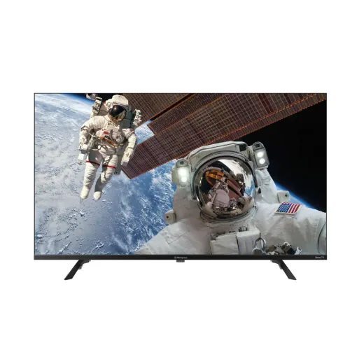
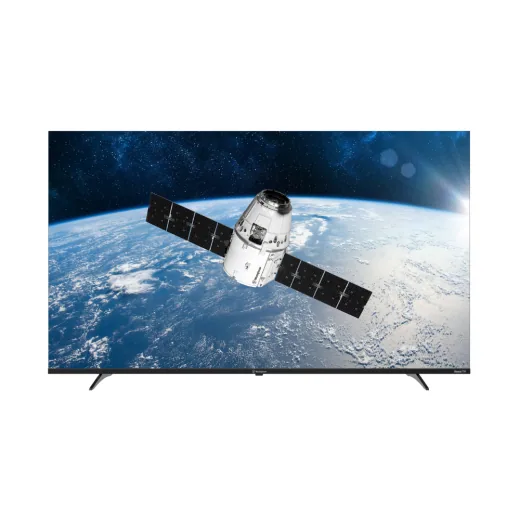
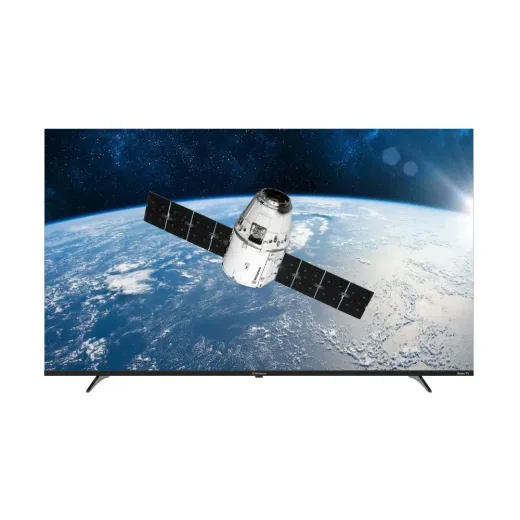

Westinghouse · Modelo W50RK
Televisor Westinghouse 50" LED 4K · W50RK
L 7,995
En RadioShack
Precio en cada tienda
| Tienda | Precio | Antes | Disponibilidad | |
|---|---|---|---|---|
| RadioShack | L 7,995 | Disponible | Ver en tienda › |
Precios referenciales tomados de cada tienda el 28 de noviembre de 2026. El precio válido es el que muestra la tienda al comprar.
Historial de precio
Lo seguimos desde el 9 de noviembre. Precio más bajo registrado: L 7,995 en RadioShack (9 de noviembre), igual que hoy. El precio no ha cambiado en ese tiempo.
Características
| Pantalla | 50" |
|---|---|
| Resolución | 4K UHD |
| Panel | LED |
Otros televisores Westinghouse

Televisor Westinghouse 40" LED Full HD · W40RKL 7,990En RadioShack Televisor Westinghouse 50" QLED 4K · W50QLL 6,997En 2 tiendas · más barato en RadioShack
Televisor Westinghouse 50" QLED 4K · W50QLL 6,997En 2 tiendas · más barato en RadioShack Televisor Westinghouse 58" QLED 4K · W58QLL 9,497En 2 tiendas · más barato en La Curacao
Televisor Westinghouse 58" QLED 4K · W58QLL 9,497En 2 tiendas · más barato en La Curacao Televisor Westinghouse 58" LED 4K · W58RKL 9,995En RadioShack
Televisor Westinghouse 58" LED 4K · W58RKL 9,995En RadioShack Televisor Westinghouse 43" QLED Full HD · W43QLL 5,597En 2 tiendas · más barato en La Curacao
Televisor Westinghouse 43" QLED Full HD · W43QLL 5,597En 2 tiendas · más barato en La Curacao Televisor Westinghouse 43" LED Full HD · W43RKL 5,595En RadioShack
Televisor Westinghouse 43" LED Full HD · W43RKL 5,595En RadioShack
Televisor Westinghouse 65" QLED 4K · TVW65QLL 10,997En 2 tiendas · más barato en RadioShack
Televisor Westinghouse 65" LED 4K · W65RKL 11,995En 2 tiendas · más barato en La Curacao